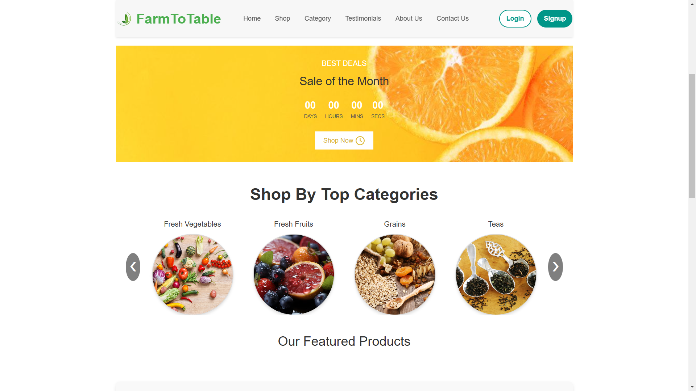
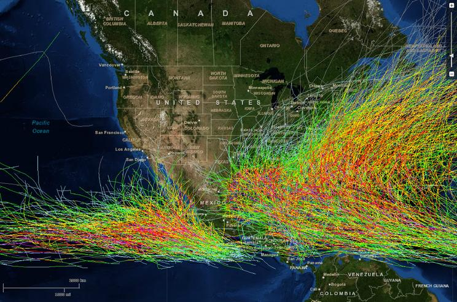
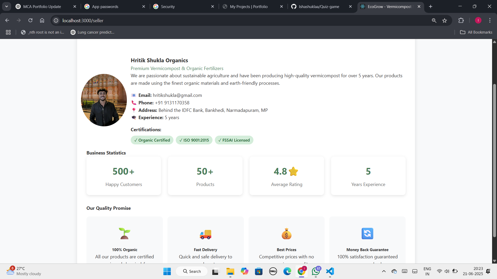

My Projects

CultureConnect
Built CultureConnect, a web platform for exploring and sharing the diverse cultures, traditions, and stories of Indian states.
React
Node.js
MongoDB
View Project

Farm to Table
Developed Farm to Table, a platform connecting local farmers with consumers to promote fresh, sustainable, and direct-from-source produce.
React
Node.js
SQL
View Project

Weather Tracker
a web app that provides real-time weather updates and forecasts for any location with a clean, user-friendly interface.
JavaScript
API
View Project

Real-Time Quiz Game
Developed a real-time multiplayer quiz game where users can create or join quiz rooms, compete live, and experience dynamic, socket-based interactions.
React
Socket.io
Node.js
Express
View Project

MridaAmrit
Created MridaAmrit, an e-commerce platform promoting sustainable farming by offering vermicompost and organic products directly to consumers.
React
Socket.io
Node.js
Express
View Project